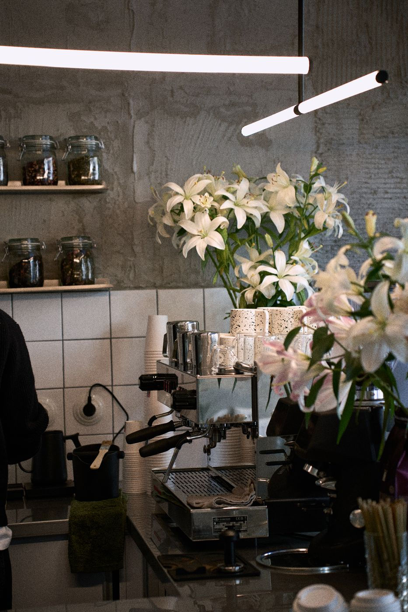
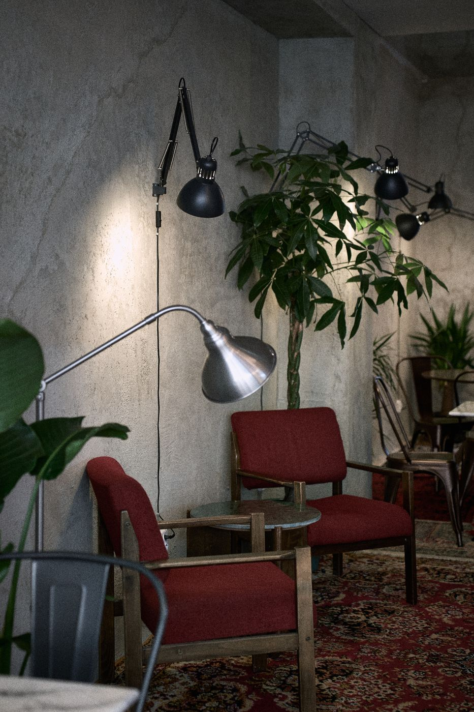
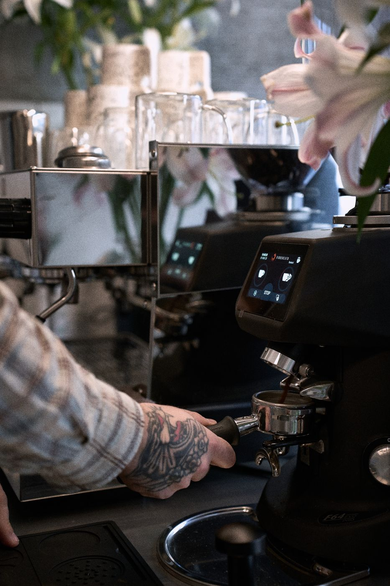
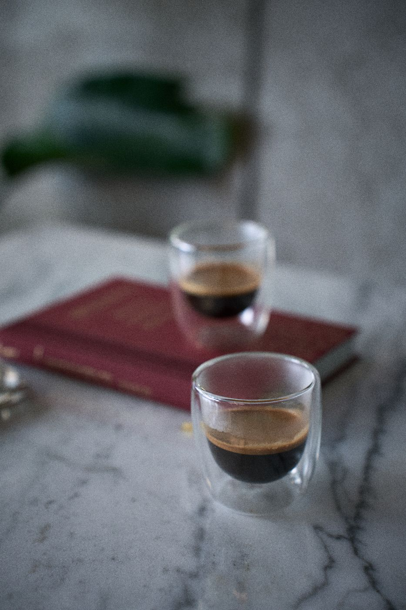
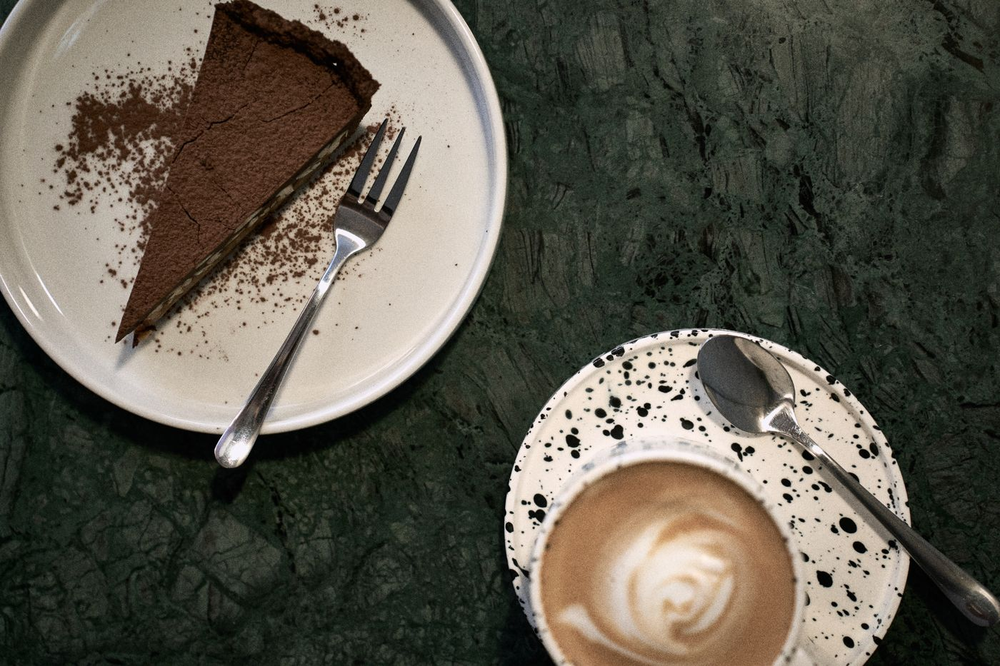
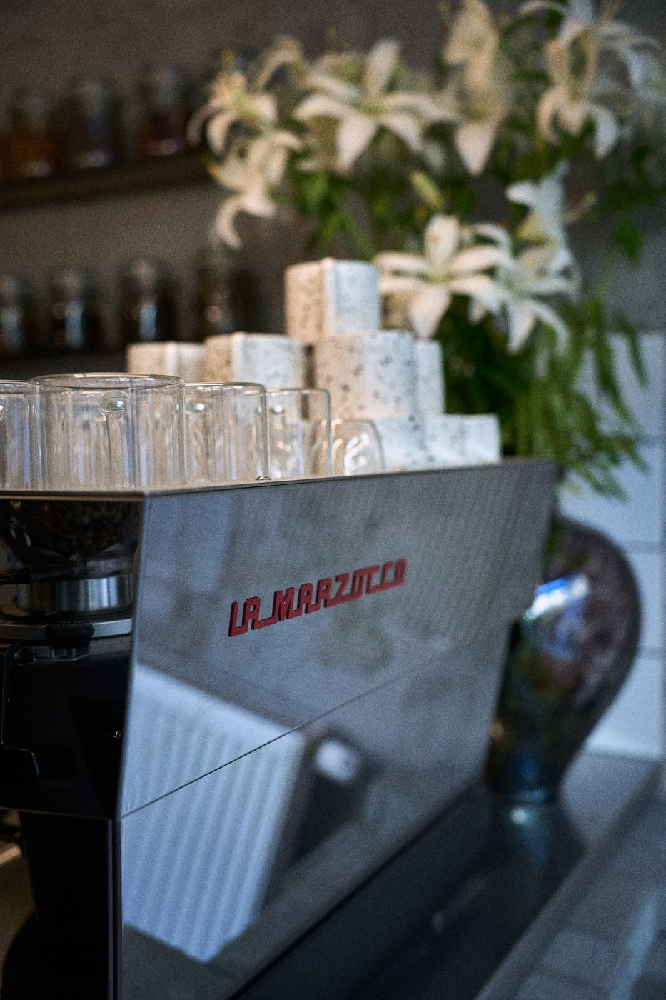
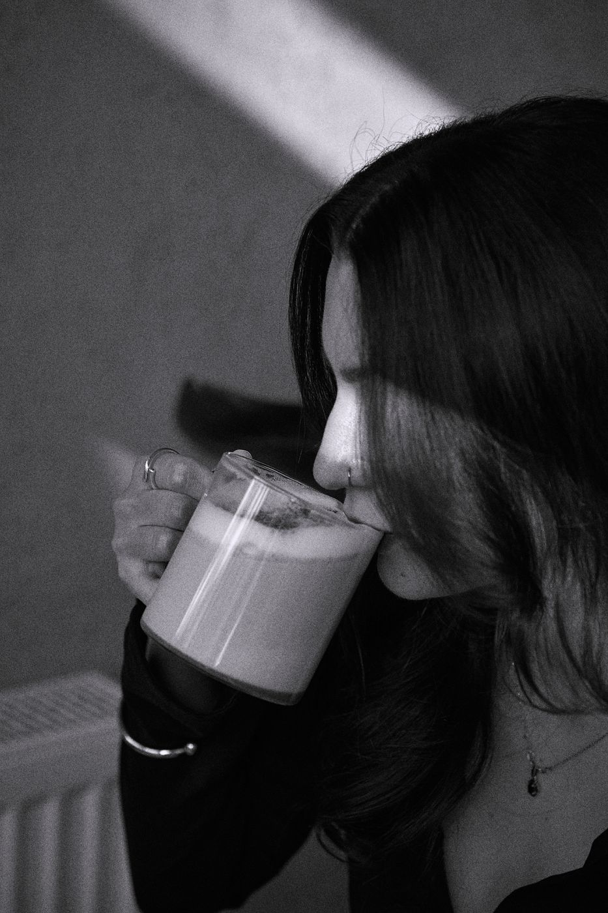
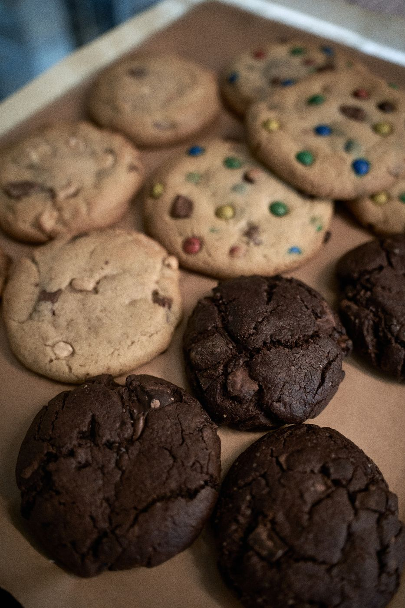
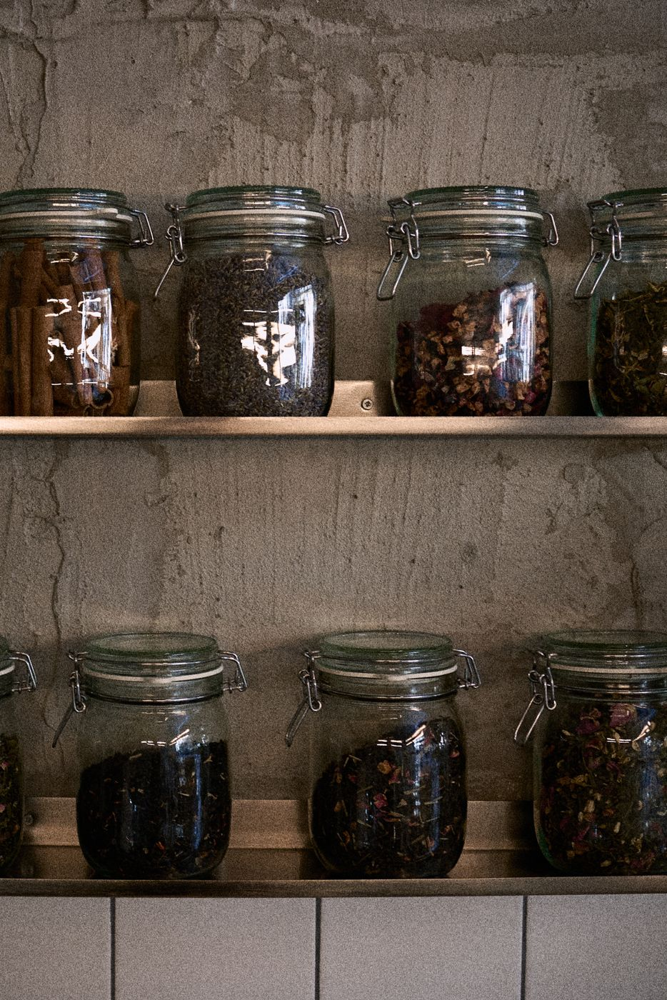

Codziennie, także w sobotę i niedzielę. Zamawiasz przy barze.
01W skrócie
Gniazdka przy stolikach. Możesz zostać na kilka godzin.
Pieszo z Dworca Głównego i Galerii Krakowskiej, tuż za Barbakanem.
02Wnętrze
Najlepsza kawa na Kleparzu, kilka kroków od Rynku.
Surowa przestrzeń po północnej stronie Plant. Blisko wszystkiego, już poza turystycznym ruchem Starego Miasta. Beton, spokój i tyle miejsca, żeby usiąść na dłużej: popracować, pogadać, odebrać rozmowę wideo.
Na espresso mielimy HAYB Yellow, ciemny blend stu procent arabiki z Brazylii i Gwatemali. Reszta karty to V60. Do tego matcha, cold brew i śniadania do trzynastej.









03Dziś w młynku
Kawa
- COSTA RICA HELLEN MORA COSTA RICA TARRAZU Kawa ziarnista jakości specialty pochodząca z Kostaryki, wypalona w warszawskiej palarni HAYB. Palona jasno, idealna do ekspresu przelewowego, dripa, Chemexa, AeroPressa, French Pressa, oraz innych alternatywnych metod parzenia. W smaku pojawiają się nuty takie jak figi, porzeczki czerwone i czekolada mleczna. V60
- COLUMBIA LA CABANA CALUMBIA BRUSELAS HUILA LaCava Colombia La Cabaña to jasno palona arabika specialty Single Origin z regionu Bruselas w departamencie Huila, jednym z najbardziej renomowanych obszarów uprawy kawy w Kolumbii. Ziarna pochodzą ze zbioru 2025, z farmy La Cabaña, gdzie odmiana Chiroso uprawiana jest na wysokości 1600–1700 m n.p.m.. Klasyczna obróbka washed podkreśla czystość filiżanki, elegancję i przejrzysty charakter tej kawy. W ocenie jakości SCA kawa uzyskała 87 punktów. Colombia La Cabaña to propozycja dla miłośników jasnych, świeżych i bardzo klarownych kaw przelewowych, w których liczy się balans i finezja aromatu. ALTERNATYWYWASHED
- CHILLWAVE STRAWBERRY BLEND COLUMBIA Kawa ziarnista jakości specialty pochodząca z Kolumbii, wypalona w warszawskiej palarni HAYB. Palona jasno, idealna do ekspresu przelewowego, dripa, Chemexa, AeroPressa, French Pressa, oraz innych alternatywnych metod parzenia. W smaku pojawiają się nuty takie jak truskawka, pomarańcza i toffi. ALTERNATYWYCOFERMENT
Wypieki
- Tarta ostatnie sztuki ostatnie 2 kawałki
04Menu
Kawa
Doppio12 zł
Americano14 zł
Flat white17 zł
Cappuccino16 zł
Latte19 zł
Orange espresso23 zł
Tonic espresso23 zł
Drip V6024 zł
+ mleko roślinne / syrop2 zł
Herbata i matcha
Matcha18 zł
Matcha latte21 zł
Matcha bananowa24 zł
Matcha orange24 zł
Herbata17 zł
Zioła17 zł
Oferta sezonowa
Cold brew (kawa)22 zł
Cold brew (herbata)16 zł
Matcha yuzu tonic24 zł
Matcha sakura tonic24 zł
Lemoniada18 zł
Czarna porzeczka i róża.
Śniadania · AM's 9–13, zamów przy barze
Pęczak z hummusemvegan39 zł
Kasza pęczak, winegret, cytrynowy hummus, marchew karmelizowana, harissa, orzechy laskowe, świeże zioła.
Tost z szynką39 zł
Chleb pszenny, prosciutto cotto, salami piccante, gouda, ser bursztyn, dressing pomidorowy, jajo sadzone, domowy ketchup.
Tosty z pomidoremwege36 zł
Chleb pszenny, pasta z suszonych pomidorów, pieczony pomidor, mozzarella, grana padano, domowy ketchup.
Carpaccio z pomidorówwege36 zł
Polskie pomidory, ser bundz, świeże zioła, oliwa, żywy ocet wiśniowy, pieczywo żytnie.
Frankfurterki z sałatką ziemniaczaną i jaja sadzone42 zł
Frankfurterki wieprzowe, sałatka ziemniaczana, jaja sadzone x2, pieczywo.
Kanapka z twarożkiemwege34 zł
Chleb żytni, pasta twarogowa z ogórkiem kiszonym, jajo na miękko, świeże zioła, pikantna oliwa.
Lista alergenów dostępna w lokalu u obsługi na życzenie.
Inne
Świeży sok pomarańczowy20 zł
Świeży sok pomidorowy18 zł
Sok pomidorowy, oliwa z oliwek, sól, pieprz, bazylia.
Kefir18 zł
Kefir, ogórek, koperek, mięta, pieprz, sól.
Woda8 zł
05Pytania
Można u was pracować z laptopem?
Można. Wi-Fi, gniazdka przy stolikach i na tyle spokojnie, żeby zrobić spotkanie albo odebrać rozmowę wideo.
Można przyjść z psem?
Tak, psy są u nas mile widziane.
Jest ogródek?
Nie. Cały Bruk jest w środku: surowa, betonowa przestrzeń, w której da się usiąść na dłużej.
Jaką kawę parzycie?
Na espresso mielimy HAYB Yellow, ciemny blend stu procent arabiki z Brazylii i Gwatemali. Reszta karty to V60, a ziaren mamy więcej i obsługa chętnie o nich opowie.
Jakie mleka macie do wyboru?
Kokosowe, migdałowe, owsiane, krowie i bez laktozy.
Są opcje wegetariańskie i wegańskie?
Tak. Opcje roślinne oznaczyliśmy w karcie plakietkami wege i vegan.
Do której podajecie śniadania?
Codziennie od 9:00 do 13:00, także w sobotę i niedzielę.
Jak do was trafić z Dworca Głównego?
Pięć minut pieszo, tuż za Barbakanem. ul. Krótka 1 na Kleparzu.